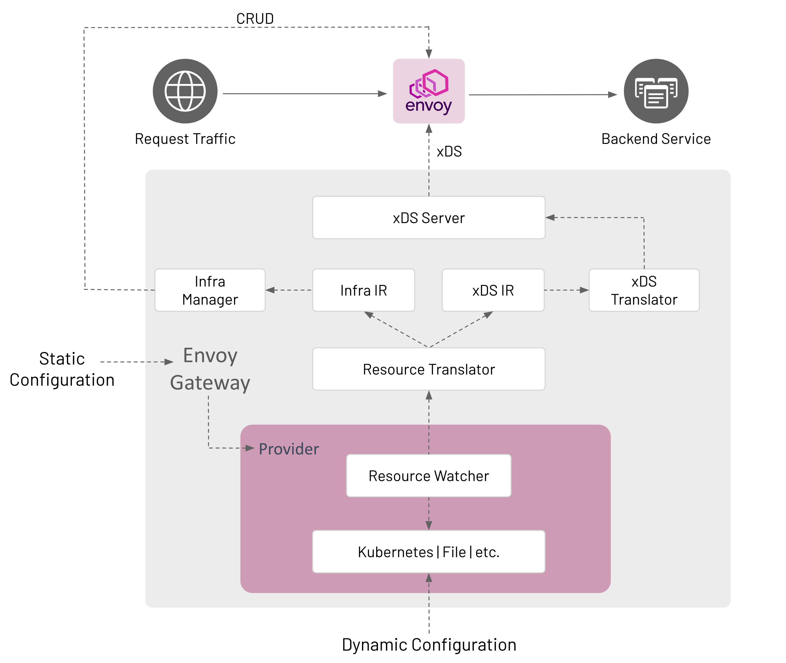

System Design¶
Goals¶
Define the system components needed to satisfy the requirements of Envoy Gateway.
Non-Goals¶
Create a detailed design and interface specification for each system component.
Terminology¶
Control Plane- A collection of inter-related software components for providing application gateway and routing functionality. The control plane is implemented by Envoy Gateway and provides services for managing the data plane. These services are detailed in the components section.
Data Plane- Provides intelligent application-level traffic routing and is implemented as one or more Envoy proxies.
Architecture¶

Configuration¶
Envoy Gateway is configured statically at startup and the managed data plane is configured dynamically through Kubernetes resources, primarily Gateway API objects.
Static Configuration¶
Static configuration is used to configure Envoy Gateway at startup, i.e. change the GatewayClass controllerName, configure a Provider, etc. Currently, Envoy Gateway only supports configuration through a configuration file. If the configuration file is not provided, Envoy Gateway starts-up with default configuration parameters.
Dynamic Configuration¶
Dynamic configuration is based on the concept of a declaring the desired state of the data plane and using reconciliation loops to drive the actual state toward the desired state. The desired state of the data plane is defined as Kubernetes resources that provide the following services:
Infrastructure Management- Manage the data plane infrastructure, i.e. deploy, upgrade, etc. This configuration is expressed through GatewayClass and Gateway resources. The
EnvoyProxyCustom Resource can be referenced bygatewayclass.spec.parametersRefto modify data plane infrastructure default parameters, e.g. expose Envoy network endpoints using a NodePort service instead of a LoadBalancer service.Traffic Routing- Define how to handle application-level requests to backend services. For example, route all HTTP requests for “www.example.com” to a backend service running a web server. This configuration is expressed through HTTPRoute and TLSRoute resources that match, filter, and route traffic to a backend. Although a backend can be any valid Kubernetes Group/Kind resource, Envoy Gateway only supports a Service reference.
Components¶
Envoy Gateway is made up of several components that communicate in-process; how this communication happens is described in the Watching Components Design.
Provider¶
A Provider is an infrastructure component that Envoy Gateway calls to establish its runtime configuration, resolve services, persist data, etc. As of v0.2, Kubernetes is the only implemented provider. A file provider is on the roadmap via Issue #37. Other providers can be added in the future as Envoy Gateway use cases are better understood. A provider is configured at start up through Envoy Gateway’s static configuration.
Kubernetes Provider¶
Uses Kubernetes-style controllers to reconcile Kubernetes resources that comprise the dynamic configuration.
Manages the data plane through Kubernetes API CRUD operations.
Uses Kubernetes for Service discovery.
Uses etcd (via Kubernetes API) to persist data.
File Provider¶
Uses a file watcher to watch files in a directory that define the data plane configuration.
Manages the data plane by calling internal APIs, e.g.
CreateDataPlane().Uses the host’s DNS for Service discovery.
If needed, the local filesystem is used to persist data.
Resource Watcher¶
The Resource Watcher watches resources used to establish and maintain Envoy Gateway’s dynamic configuration. The mechanics for watching resources is provider-specific, e.g. informers, caches, etc. are used for the Kubernetes provider. The Resource Watcher uses the configured provider for input and provides resources to the Resource Translator as output.
Resource Translator¶
The Resource Translator translates external resources, e.g. GatewayClass, from the Resource Watcher to the Intermediate Representation (IR). It is responsible for:
Translating infrastructure-specific resources/fields from the Resource Watcher to the Infra IR.
Translating proxy configuration resources/fields from the Resource Watcher to the xDS IR.
Note: The Resource Translator is implemented as the Translator API type in the gatewayapi package.
Intermediate Representation (IR)¶
The Intermediate Representation defines internal data models that external resources are translated into. This allows Envoy Gateway to be decoupled from the external resources used for dynamic configuration. The IR consists of an Infra IR used as input for the Infra Manager and an xDS IR used as input for the xDS Translator.
Infra IR- Used as the internal definition of the managed data plane infrastructure.
xDS IR- Used as the internal definition of the managed data plane xDS configuration.
xDS Translator¶
The xDS Translator translates the xDS IR into xDS Resources that are consumed by the xDS server.
xDS Server¶
The xDS Server is a xDS gRPC Server based on Go Control Plane. Go Control Plane implements the Delta xDS Server Protocol and is responsible for using xDS to configure the data plane.
Infra Manager¶
The Infra Manager is a provider-specific component responsible for managing the following infrastructure:
Data Plane - Manages all the infrastructure required to run the managed Envoy proxies. For example, CRUD Deployment, Service, etc. resources to run Envoy in a Kubernetes cluster.
Auxiliary Control Planes - Optional infrastructure needed to implement application Gateway features that require external integrations with the managed Envoy proxies. For example, Global Rate Limiting requires provisioning and configuring the Envoy Rate Limit Service and the Rate Limit filter. Such features are exposed to users through the Custom Route Filters extension.
The Infra Manager consumes the Infra IR as input to manage the data plane infrastructure.
Design Decisions¶
Envoy Gateway consumes one GatewayClass by comparing its configured controller name with
spec.controllerNameof a GatewayClass. If multiple GatewayClasses exist with the samespec.controllerName, Envoy Gateway follows Gateway API guidelines to resolve the conflict.gatewayclass.spec.parametersRefrefers to theEnvoyProxycustom resource for configuring the managed proxy infrastructure. If unspecified, default configuration parameters are used for the managed proxy infrastructure.Envoy Gateway manages Gateways that reference its GatewayClass.
A Gateway resource causes Envoy Gateway to provision managed Envoy proxy infrastructure.
Envoy Gateway groups Listeners by Port and collapses each group of Listeners into a single Listener if the Listeners in the group are compatible. Envoy Gateway considers Listeners to be compatible if all the following conditions are met:
Either each Listener within the group specifies the “HTTP” Protocol or each Listener within the group specifies either the “HTTPS” or “TLS” Protocol.
Each Listener within the group specifies a unique “Hostname”.
As a special case, one Listener within a group may omit “Hostname”, in which case this Listener matches when no other Listener matches.
Envoy Gateway does not merge listeners across multiple Gateways.
Envoy Gateway follows Gateway API guidelines to resolve any conflicts.
A Gateway
listenercorresponds to an Envoy proxy Listener.
An HTTPRoute resource corresponds to an Envoy proxy Route.
Each backendRef corresponds to an Envoy proxy Cluster.
The goal is to make Envoy Gateway components extensible in the future. See the roadmap for additional details.
The draft for this document is here.